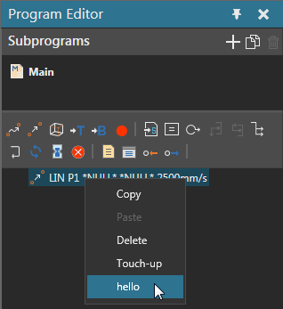
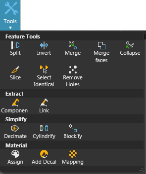
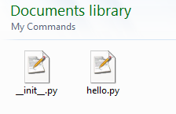
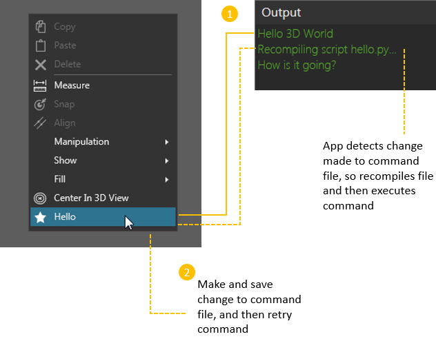

Adding your own tools to the user interface can be accomplished in a few simple steps.
A command file contains the actions executed by your add-on. Every command must have at least one state defined by a function. For example, when a user clicks a button that event executes the first state of a command tied to that button.
To add command states, import vcCommand and use the addState() method. The states of a command are initialized when the command is registered and loaded by the application.
Tip: You can edit a command file while running the application since it will detect changes and automatically recompile the command before executing it.
| from vcCommand import * def first_state(): print "Hello World" addState(first_state) |
The context of the application can be used to define access to and the functionality of your add-on. In some cases, you can place the menu item of a command in a way that requires no additional work. For example, menu items bound to the Program tab would not appear when the Home tab is active in the workspace. This also applies to menu items that are displayed in context menus, for example the context menu of a statement in the Program Editor panel.

You can get a handle for the application, and then use its context properties to affect the execution of your add-on.
| from vcCommand import * cmd = getCommand() def first_state(): app = cmd.Application if app.CurrentContext.Id == "Drawing": print "Hello Drawing World" else: print "Hello 3D World" addState(first_state) |
Properties can be added to a command and displayed in a task pane. This allows you to customize the execution of a command in real time using a graphical interface. Any property of a command that is set to visible will be displayed in its task pane.
Note: A task pane is sometimes referred to as an action panel.
| from vcCommand import * cmd = getCommand() message = cmd.createProperty(VC_STRING, "Message") end_button = cmd.createProperty(VC_BUTTON, "Respond") def first_state(): executeInActionPanel() app = cmd.Application if app.CurrentContext.Id == "Drawing": print "Hello Drawing World" else: print "Hello 3D World" addState(first_state) def OnRespond(args): print cmd.Message end_button.OnChanged = OnRespond |
Add some style to your add-on by including an image. The image must be a SVG file and contain a <path> element that defines its shape. It is recommended to use dimensions of 16x16 pixels, otherwise the application will automatically scale down your image.
An SVG for an add-on can have color . If your SVG uses hexadecimal color #393939, the color will change depending on the Theme setting of the application. For example, color #393939 is white in Dark theme and black in Light theme.
If your SVG uses basic shapes or primitives, you would need to convert them to compound paths. That is, the shape or object is rendered using a <path> element. Most SVG editors should have an option available to perform the conversion.
Example. Basic Shape converted to Path
| <polygon fill="#FFFFFF" stroke="#000000" stroke-miterlimit="10"
points="20.182,10.809 30.07,12.047 23.072,19.144 24.951,28.932
16.04,24.469 7.312,29.279 8.803,19.426 1.53,12.612 11.362,10.983
15.595,1.961 "/> converted in Adobe Illustrator using Compound Path > Make command or CTRL+8 shortcut <path fill="#FFFFFF" stroke="#000000" stroke-miterlimit="10" d="M20.182,10.809l9.889,1.238l-6.998,7.097l1.879,9.788l-8.912-4.463 l-8.728,4.811l1.491-9.854L1.53,12.612l9.832-1.629l4.233-9.022L20.182,10.809z"/> |
An initialization file contains instructions for loading and displaying your add-on when you start the application.
To register a command, import vcApplication, get the path to the command file of your add-on, and then use the loadCommand() method.
In all cases, the initialization and command files of your add-on will be in the My Commands folder of the application's documents. You can use the getApplicationPath() method and then concatenate a string that identifies your command file to form a URI. You can put your add-on files in a subfolder to better organize the My Commands folder. In that case, the application would still be able to find your commands by name without knowing its absolute path.
| from vcApplication import * def OnAppInitialized(): cmduri = getApplicationPath() + "hello.py" cmd = loadCommand("hello",cmduri) |
The netCommand allows you to call .NET API commands and use them in Python. This is helpful since some API might not be available in Python.
In this case, you will use the netCommand to call SetLocalizationCommand, which means a total of six command arguments.
In all cases, if a command has not been localized for a language supported by the application, the command will use certain defaults. The label of a command will be the caption given to it when you add it to a menu. The labels of command properties will use the name of each property. The icon of a command or its properties will either be empty or use a default icon picked by the application.
| from vcApplication import * def OnAppInitialized(): cmduri = getApplicationPath() + "hello.py" cmd = loadCommand("hello",cmduri) localize = findCommand("netCommand") localize.execute("SetLocalizationCommand", "English", "Python", "hello", "Text", "Hello") localize.execute("SetLocalizationCommand", "English", "Python", "hello", "Tooltip", "Print Hello World") localize.execute("SetLocalizationCommand", "English", "Python", "hello", "Icon", "HelloWorld.svg") localize.execute("SetLocalizationCommand", "German", "Python", "hello", "Text", "Hallo") localize.execute("SetLocalizationCommand", "German", "Python", "hello", "Text", "Print Hallo Welt") localize.execute("SetLocalizationCommand", "German", "Python", "hello", "Icon", "HelloWorld.svg") |
Tip: The application automatically checks the Icons folder located in its program files to source an icon for a command. Any image in the Icons folder can be referenced by name or its file path in that directory. Otherwise, you need to pass the full URI of an icon or a string that provides the 'd' attribute value of an SVG <path> element.
Example. Description of path for rendering icon
| icon =
"""M11.477,11.12l4.303-9.092l4.599,8.945l9.977,1.282l-7.086,7.139
l1.864,9.884l-8.979-4.532l-8.825,4.826l1.537-9.94L1.549,12.73L11.477,11.12z"""
localize = findCommand("netCommand") localize.execute("SetLocalizationCommand", "English", "Python", "hello", "Icon", icon) |
Note: When the size of the main window becomes too small to display all items of a Ribbon group, the Ribbon group and its items are displayed as a drop-down menu. The icon of that drop-down menu can be an icon assigned to the Ribbon group.
Example. Define icon of Ribbon group
| from vcApplication import * def OnAppInitialized(): localize = findCommand("netCommand") ##sets the group icon by referring to group name ##when group is collapsed it becomes a drop-down menu that uses its group icon localize.execute("SetLocalizationCommand", "English", "Python", "rMyGroup", "Icon", "rAdd") ##adds two items to group that have default Python icon addMenuItem("VcTabHome/rMyGroup", "Item 1", -1, "") addMenuItem("VcTabHome/rMyGroup", "Item 2", -1, "") |
As long as the commands of an add-on are registered with the application, you can execute them. For component scripting, you can use the findCommand() method in vcApplication to get handle for a command in your add-on. You can do the same for application scripting, but remember in both cases to take into consideration the command stack of the application. For example, a command might not end when another command is called, so use the cancelCommand() in vcApplication to manage this issue.
You may want to start and stop the execution a command using menu items. A menu item is an area of the user interface commonly referred to as a section. Each section can be identified by either a constant or an id. In some cases, you might use a constant plus an id to refer to a section. In other cases, you would use as many IDs as needed to identify the section where you want to add a menu item.
If you refer to an existing section, the application will add your item to that section with some exceptions.
If you refer to a section that does not exist, the application will either add or not add your item.
Caution: You can refer to the <UXSitesSection> element of your application's configuration file to know valid IDs. Each id is an 'ItemId' attribute of a <Site> element. However, some ids might not work, and you should not directly edit the configuration file. Refer to the EULA of the application as needed. In most cases, you should use the Forum or contact support to know what IDs you need to use for your add-on.
| from vcApplication import * def OnAppInitialized(): cmduri = getApplicationPath() + "hello.py" cmd = loadCommand("hello",cmduri) localize = findCommand("netCommand") localize.execute("SetLocalizationCommand", "English", "Python", "hello", "Text", "Hello") localize.execute("SetLocalizationCommand", "English", "Python", "hello", "Tooltip", "Print Hello World") localize.execute("SetLocalizationCommand", "English", "Python", "hello", "Icon", "HelloWorld.svg") localize.execute("SetLocalizationCommand", "German", "Python", "hello", "Text", "Hallo") localize.execute("SetLocalizationCommand", "German", "Python", "hello", "Tooltip", "Print Hallo Welt") localize.execute("SetLocalizationCommand", "German", "Python", "hello", "Icon", "HelloWorld.svg") addMenuItem(VC_MENU_HOME, "hello", -1, "hello") addMenuItem(VC_MENU_DRAWING, "hello", -1, "hello") |
A gallery menu (drop-down menu) is a type of control that allows you to list add-ons and group them by section. The menu item itself is a placeholder but can also be associated with a command.

You can add a gallery menu to the Ribbon by specifying a group in its site path, and then define its control type as a GalleryMenuTool. Next, a menu item for that gallery would reference the same group in its site path followed by its section. The menu item would then need to reference the id of the gallery menu, and then define its control type as a GalleryMenuToolItem. For localization, refer to the control id or command of a gallery menu and its items. You can also localize sections by referring to them by name.
Example. Create a gallery menu placeholder
| from vcApplication import* def OnAppInitialized(): addMenuItem("VcTabHome/Test", "Widgets", -1, "GalleryMenuId01", "A gallery of my widgets", "rDetach", "", "GalleryMenuTool") |
Example. Create gallery menu items with sections
| from vcApplication import* def OnAppInitialized(): addMenuItem("VcTabHome/Test", "Widgets", -1, "GalleryMenuId01", "A gallery of my widgets", "rDetach", "", "GalleryMenuTool") addMenuItem("VcTabHome/Test/SectionA", "Clear", -1, "", "Clears the Output panel","rClearAll", "GalleryMenuId01","GalleryMenuToolItem") addMenuItem("VcTabHome/Test/SectionA", "Save", -1, "", "Saves the content of Output panel","rSave", "GalleryMenuId01","GalleryMenuToolItem") addMenuItem("VcTabHome/Test/SectionB", "Export", -1, "", "Exports metadata of layout components","rExpanderIcon", "GalleryMenuId01","GalleryMenuToolItem") |
Example. Localize a gallery menu as well as its sections and items
| from vcApplication import* def OnAppInitialized(): localize = findCommand("netCommand") localize.execute("SetLocalizationCommand", "English", "Python", "GalleryMenuId01", "Text", "Widgets") localize.execute("SetLocalizationCommand", "English", "Python", "SectionA", "Text", "SectionA") localize.execute("SetLocalizationCommand", "English", "Python", "GalleryMenuId01", "Text", "Widgets") localize.execute("SetLocalizationCommand", "German", "Python", "GalleryMenuId01", "Text", "Widgets") localize.execute("SetLocalizationCommand", "German", "Python", "SectionA", "Text", "Abschnitt") localize.execute("SetLocalizationCommand", "German", "Python", "ItemId01", "Text", "Speichern") addMenuItem("VcTabHome/Test", "Widgets", -1, "GalleryMenuId01", "A gallery of my widgets", "rDetach", "", "GalleryMenuTool") addMenuItem("VcTabHome/Test/SectionA", "Save", -1, "ItemId01", "Saves the content of Output panel ","rSave", "GalleryMenuId01","GalleryMenuToolItem") |
Important: If you are placing your add-on in a gallery menu that is not defined by the initialization (INI) file of your add-on, the files of your add-on must be in a child folder of the INI file defining the menu. For example, the INI file of your add-on might reference a gallery menu before it is created when initializing the application. This rule does not apply to gallery menus defined by the application.
Example. __init__ file defines gallery menu that is referenced by __init__ file in child folder

A Ribbon tab is a type of control that allows you to display groups of commands in a ribbon. The menu item would need to reference itself using its site id, which needs to contain the word "Tab", for example Tab<Tab name>. The control type is RibbonTab.
Example. Add tabs to ribbon
| from vcApplication import * def OnAppInitialized(): localize = findCommand("netCommand") localize.execute("SetLocalizationCommand", "English", "Python", "TabExample01", "Text", "My Tab 01") localize.execute("SetLocalizationCommand", "English", "Python", "TabExample02", "Text", "My Tab 02") #long form addMenuItem("TabExample01", "", -1, "TabExample01", "", "", "", "RibbonTab") #short form addMenuItem(UxSite="TabExample02", Index=-1, Id="TabExample02", ControlType="RibbonTab") |
A contextual tab group is a group of Ribbon tabs that appear based on the context of main application. The menu item would need to reference itself using its site id, which needs to contain the word "ContextTab", for example ContextTab<Group name>. The control type is ContextualTabGroup and supports a custom background color for the group.
A custom Ribbon tab can be attached to the group by referencing the site id of the group in the path and parent arguments.
Example. Turn on/off the visibility of contextual tab group
| from vcCommand import * app = getApplication() cmd = getCommand() def ShowOrHideCustomRibbonTab(): if app.CurrentContext.Id == "Teach": app.setContextualTabGroup("pyContextTabGroup",True) print "Your custom pyContextTabGroup is shown in " + app.CurrentContext.Id + " context." else: app.setContextualTabGroup("pyContextTabGroup",False) print "Your custom pyContextTabGroup is hidden in " + app.CurrentContext.Id + " context." app.OnContextChanged = ShowOrHideCustomRibbonTab |
Example. Add contextual tab group to Ribbon
| from vcApplication import * def OnStart(): cmduri = getApplicationPath() + "ShowContextualRibbonTab.py" cmd = loadCommand("ShowContextualRibbonTab",cmduri) cmduri2 = getApplicationPath() + "printHelloLocalized.py" cmd = loadCommand("printHelloLocalized",cmduri2) iconPath = getCommandPath() + "Hello.svg" # Localisation is done through referencing to DotNet functionality localize = findCommand("netCommand") # Localisation in English language localize.execute("SetLocalizationCommand", "English", "Python", "printHelloLocalized", "Text", "Print Hello") localize.execute("SetLocalizationCommand", "English", "Python", "printHelloLocalized", "Tooltip", "Print hello World in message panel") localize.execute("SetLocalizationCommand", "English", "Python", "printHelloLocalized", "Icon", iconPath) localize.execute("SetLocalizationCommand", "English", "Python", "VcTabExample01" , "Text", "My English Tab 01") # Localisation in German language localize.execute("SetLocalizationCommand", "German", "Python", "printHelloLocalized", "Text", "Hallo in Meldungsfenster") localize.execute("SetLocalizationCommand", "German", "Python", "printHelloLocalized", "Tooltip", "Hallo Welt in Berichtfenster drücken") localize.execute("SetLocalizationCommand", "German", "Python", "printHelloLocalized", "Icon", "CellGraph\cgOpenFolder.svg") localize.execute("SetLocalizationCommand", "German", "Python", "VcTabExample01" , "Text", "My German Tab 01") # Localisation in simplified Chinese language localize.execute("SetLocalizationCommand", "Chinese", "Python", "printHelloLocalized", "Text", "你好世界") localize.execute("SetLocalizationCommand", "Chinese", "Python", "printHelloLocalized", "Tooltip", "你好世界") localize.execute("SetLocalizationCommand", "Chinese", "Python", "printHelloLocalized", "Icon", iconPath) localize.execute("SetLocalizationCommand", "Chinese", "Python", "VcTabExample01" , "Text", "My Chinese Tab 01") #Step 1: First add Ribbon Contextual tab group. Id is the id of the group which Ribbon tab created in step 2 is going to associate. addMenuItem(UxSite = 'pyContextTabGroup',UxName = "PythonExtraContextTab", Index = -1, Id = "pyContextTabGroup",Parent="gmAction",ControlType="ContextualTabGroup",BaseBackColor="#ff1985") #ssisss #Step 2: Add Ribbon Tab and associate it with Contextual ribbon group. # The Parent attribute is to set to the Contextual tab group. # Id of Ribbon tab is the id used to identify it. addMenuItem(UxSite = "pyContextTabGroup/VcTabExample01", Index=-1, Id="VcTabExample01", ControlType="RibbonTab", Parent="pyContextTabGroup") addMenuItem(UxSite = "pyContextTabGroup/VcTabExample02", UxName="My unlocalized Tab 02", Index = -1, Id = "VcTabExample02", ControlType="RibbonTab", Parent="pyContextTabGroup") # now you can add ribbon items in this addMenuItem('pyContextTabGroup/VcTabExample01/NewRibbonGroup', "R Group" , -1, "printHelloLocalized" , "","","","") addMenuItem('pyContextTabGroup/VcTabExample02/NewRibbonGroup', "R Group" , -1, "printHelloLocalized" , "","","","") #or #addMenuItem(UxSite='pyContextTabGroup/VcTabExample01/NewRibbonGroup',UxName="R Group" ,Index=-1, Id="printHelloLocalized") |
For localizing your add-on, you can use the netCommand, as shown in previous examples, to call the SetLocalizationCommand defined in .NET API. You can also use a XAML resource dictionary to localize your add-on for one or more languages. Each language is a separate file stored with your add-on. The language must be supported by the application, but you can modify the labels and tooltips of properties as needed for intended users. For example, you can have an add-on that supports English with tooltips in both English, Creole, and English-based Pidgin.
Each language file must be named "PyResource.<language>" and saved as a XAML file.
Note: In some cases, you might see a language file prefixed with the name of its directory. This can be done to avoid checking language files not associated with your add-on.
Example. English language file for add-on
| <ResourceDictionary
xmlns="http://schemas.microsoft.com/winfx/2006/xaml/presentation"
xmlns:x="http://schemas.microsoft.com/winfx/2006/xaml" xmlns:s="clr-namespace:System;assembly=mscorlib"> <!-- This localizes the group where I put the command --> <s:String x:Key="ComboKey::Python.rMyGroup.Text">Label for group</s:String> <s:String x:Key="ComboKey::Python.rMyGroup.Tooltip">Tooltip for group</s:String> <s:String x:Key="ComboKey::Python.rMyGroup.Icon">pLock.svg</s:String> <!-- This localizes the command itself --> <s:String x:Key="ComboKey::Python.example.Text">Label for command</s:String> <s:String x:Key="ComboKey::Python.example.Tooltip">Tooltip for command</s:String> <s:String x:Key="ComboKey::Python.example.Icon">rUndo.svg</s:String> <!-- This localizes command properties --> <s:String x:Key="ComboKey::Python.example.ExampleProperty.Name">Label for command property</s:String> <s:String x:Key="ComboKey::Python.example.ExampleProperty.Description">Tooltip for command property</s:String> </ResourceDictionary> |
Notes:
In order for the application to load and initialize your add-on, you must
place its initialization and command files in the My Commands folder of your
application's documents. The path to your My Commands folder will be similar to
the example below, including your unique PC user name and the version of R-Pro
installed.
C:\Users\%USERNAME%\Documents\R-Pro\%VERSION%\My
Commands
It is recommended to put the icons of your add-on in the
Icons folder of your application's program files e.g. C:\Program Files\R-Pro %VERSION%\Icons. Otherwise, make sure
the URI of an icon matches the one you reference in your initialization
file.

Source files of example add-on
Run the application, and then test your add-on. One benefit is that you can edit the command files of your add-on in real time since the application will automatically recompile them for you.
